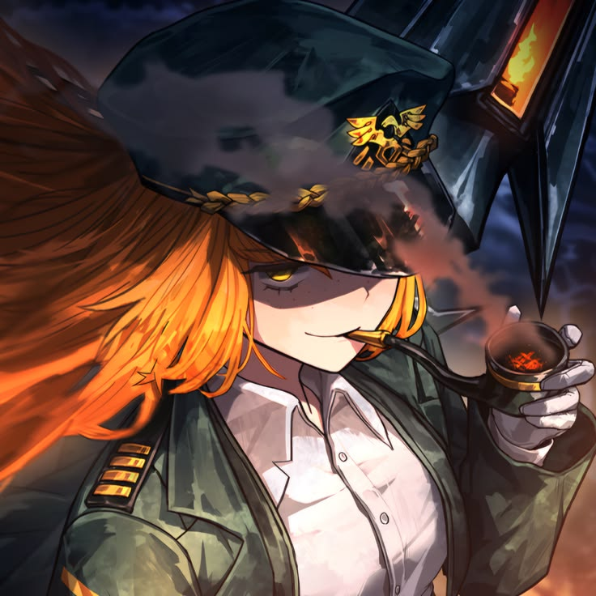
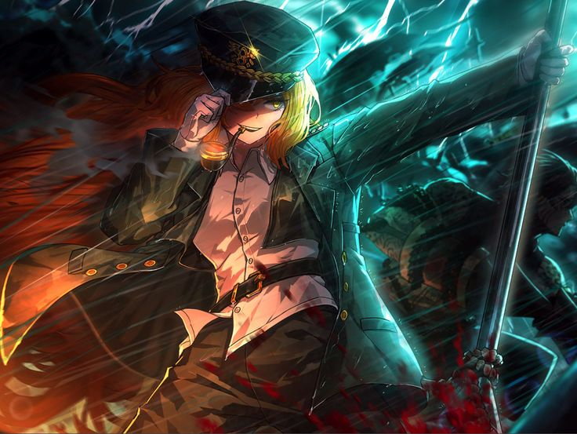

MY HERO
ISHMAEL - LIMBUS COMPANY

" I'll trust your decisions and orders, captain. But I am not going to just accept them at face value.
I'll constantly question and try to understand them. So that when my compass no longer aligns with yours,
I can take my skiff and sail away.So that I won't let anything consume me again. So I won't lose myself again”.
- Ishmael (Limbus Company).
Ishmael is a character from the game Limbus Company by Project Moon, based on Ishmael from the novel Moby-Dick by Herman Melville.
Ishmael in this iteration is female and is a part of an organization called Limbus Company, specifically a section called the Sinners,
who are responsible for retrieving special artifacts called golden boughs.Before working for Limbus Company, Ishmael worked an unfulfilling
office job and then joined a crew of hunters. These hunters were tasked with searching for and killing the Pallid, A giant whale monster that
is part of the 5 calamities of the region. Soon the ship was destroyed, with Ishmael being the only recorded survivor, who then went on to work with Limbus Company.
With her main goal to find and kill Ahab, whom she believed survived the attack and whose overconfidence and control over the ship led to its destruction
During her arc, it is revealed that Ahab and some of the crew survived and are trapped within the whale by supernatural means.
The only way for the Limbus Company team and the crew to survive is to journey through the whale and destroy its heart.
It is revealed that Ahab had been sacrificing the crewmates during their imprisonment to save herself. She tried to use nostalgia
and manipulation to convince Ishmael to sacrifice her colleagues. Ishmael, now seeing through Ahab's tricks, refuses, starting a
confrontation between Ahab and the remaining crewmates and the Limbus team. During this battle, the last two crewmates who were devoted
followers of Ahab and Ishmael's closest friends get absorbed by Ahab, who unlocks her EGO (power), turning them into weapons.
After the battle in which Ahab is finally killed by Ishmael, she spears the whale's heart with her harpoon with the aid of the ghosts of her fallen friends.
Killing the whale and allowing the team to leave mostly unscathed. With Ishmael finally completing her goal, she decides to stay with the company and stay true to
herself until the day comes when she will depart for a voyage of her own, following her compass.
Ishmael is my hero because she progressed and gained her own mental autonomy. From being a corporate drone office worker to a whale hunter. She was never allowed
to have her own ideas or thoughts and was expected to blindly follow orders. And she adapted to this life, finding security in putting your life in the hands of someone
else and their own ideals, especially when you, as an individual, lack your own ideals. Despite the time and sacrifice it took, she progressed and evolved. She stopped blindly
following others just because she looked up to them or because they were an authority figure. And to recognize that she is not a drone and is capable of having her own ideals and
issues with plans, and that she is not responsible for when people mess up because of their own pride and hubris. To follow and stand up for her ideals and to know when to distance
herself when they don't align with her ideals. To follow her compass. I find I relate heavily to Ishmael and hope one day I too can Follow My Compass.
